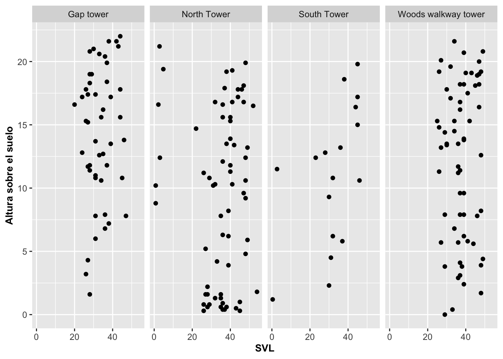
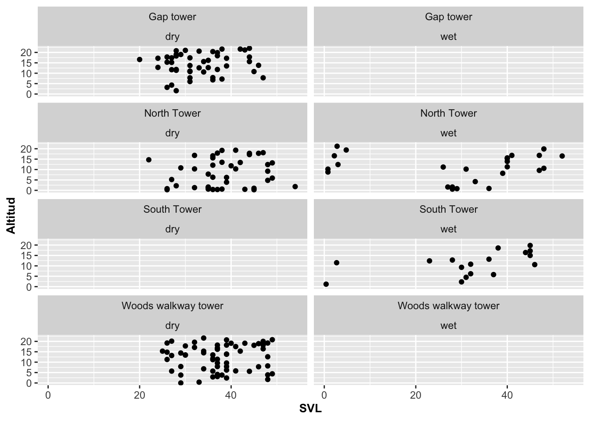
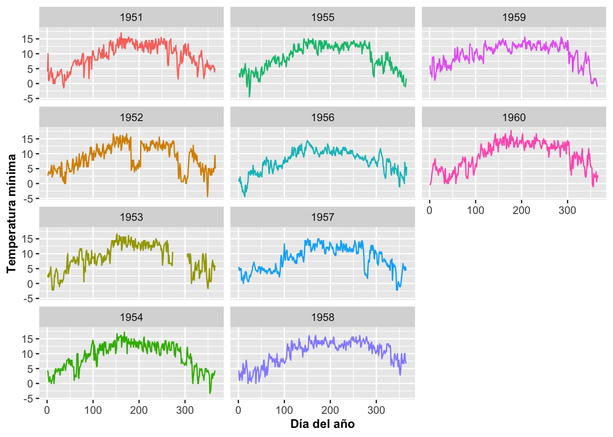

Facet_wrap
Fecha de la ultima revisión
## [1] "2020-10-14"Gráficos por categoría con facet_wrap
Facet_wrap: Descripción general
En este modulo se muestra una de las grandes ventajas de usar ggplot2. Para la producción de un gráfico por diferentes grupos o categorías, se usa la opción de facet_wrap(); o sea, cada grupo genera la producción de un gráfico. Por ejemplo, observe en la Figura que cada localidad de muestreo genera su propio gráfico. Para lograr esos cuatro gráficos, se necesitaron tres variables, en que por lo menos una es categórica. En este ejemplo se representa la cantidad de Anolis muestreado en el periodo seco y lluvioso separado por las cuatro localidades en el bosque usando geom_bar. Note la tilde, ~, antes del nombre de la variable categórica Survey_Site.
## # A tibble: 6 x 15
## STUDY Survey_Site LOCATION TIME DATE SEASON SPECIES SEX_AGE HEIGHT
## <chr> <chr> <chr> <tim> <chr> <chr> <chr> <chr> <dbl>
## 1 Mark… North Tower El Verde 10:46 3/13… dry Anolis… Female 0
## 2 Mark… Woods walk… El Verde 10:15 2/20… dry Anolis… Juvenil 0
## 3 Mark… Woods walk… El Verde 11:15 2/21… dry Anolis… Male 0
## 4 Mark… North Tower El Verde 11:06 3/16… dry Anolis… Juvenil 0.3
## 5 Mark… North Tower El Verde 12:31 3/11… dry Anolis… Male 0.3
## 6 Mark… North Tower El Verde 01:00 3/9/… dry Anolis… Female 0.4
## # … with 6 more variables: DISTANCE_FROM_CENTERLINE <dbl>,
## # PERCH_SUBSTRATE <chr>, PERCH_DIAMETER <int>, WEIGHT <dbl>, SVL <dbl>,
## # TAIL <dbl>barraA=ggplot(Anolis, aes(SEX_AGE, fill=SEASON))
barraA+geom_bar()+ # contabiliza la cantidad de información por factor
facet_wrap(Survey_Site~.)+
labs(y="Frecuencia", x="Género y edad")+
theme(axis.title=element_text(size=10,face="bold"))En el próximo gráfico se usa geom_point combinado con facet_wrap con las variables de tamaño de los Anolis y la altitud del lugar de muestreo en donde el lagarto fue encontrado.
barraC=ggplot(Anolis, aes(SVL, HEIGHT))
barraC+geom_point()+
facet_wrap(~Survey_Site)+
labs(y="Altura del muestreo")+
theme(axis.title=element_text(size=10,face="bold"))Facet_wrap: Gráficos en una fila
Para cambiar la cantidad de columnas o filas se usa nrow y ncol. En el ejemplo ponemos todos los gráficos en una fila con nrow igual a 1.
barraD=ggplot(Anolis, aes(SVL, HEIGHT))
barraD+geom_point()+
facet_wrap(~Survey_Site, nrow=1)+
labs(y="Altitud")+
theme(axis.title=element_text(size=10,face="bold"))
Facet_wrap: Gráficos en una columna
Por otro lado, en el próximo ejemplo reorganizamos los gráficos para que queden uno debajo de los otros en una columna con ncol igual a 1.
barraC=ggplot(Anolis, aes(SVL, HEIGHT))
barraC+geom_point()+
facet_wrap(~Survey_Site, ncol=1)+
labs(y="Altitud")+
theme(axis.title=element_text(size=10,face="bold"))Facet_wrap: Con escala libre
A veces queremos tener los gráficos por categoría sobre la misma columna ncol=1 pero que a la misma vez la escala de cada grupo se refleje de acuerdo a los datos. Note que en el gráfico anterior todas los gráficos tienen la misma escala de 0 a 60. Si queremos que las escalas en los ejes de X y Y queden ajustadas de acuerdo a los datos de cada grupo, se utiliza la opción y parámetro (scales=“free”) . Note en la Figura que ahora cada gráfico tiene su propria escala:
barraC=ggplot(Anolis, aes(SVL, HEIGHT))
barraC+geom_point()+
facet_wrap(~Survey_Site, ncol=1, scales="free")+
labs(y="Altitud")+
theme(axis.title=element_text(size=10,face="bold"))
Facet_wrap: Con múltiples variables
Podríamos también querer organizar los gráficos de acuerdo a múltiples variables categóricas mostrando así la agrupación de los datos. En el ejemplo se agrupan de acuerdo al sitio de muestreo (Gap, North, South o Woods) y al periodo del año (seco o mojado). De esta forma, se pueden producir gráficos agrupados por múltiples variables discretas. Note que lo único que se tuvo que hacer fue añadir ~variable1 + variable2; en nuestro caso, ~Survey_Site + SEASON.
barraE=ggplot(Anolis, aes(SVL, HEIGHT))
barraE+geom_point()+
facet_wrap(~Survey_Site+SEASON)+
labs(y="Altitud")+
theme(axis.title=element_text(size=10,face="bold"))
Facet_wrap: Mostrar los grupos aunque no tengan datos
En el ejemplo que hemos estado mostrando hay localidades en que no hay datos, como en Gap Tower en la época lluviosa, en South Tower en la época seca, y en Woods Walkway Tower en la época lluviosa, y por eso no aparecen en la figura. Si queremos mostrar los gráficos de esos sitios donde no existe información, se usa la opción de drop = FALSE.
barraE=ggplot(Anolis, aes(SVL, HEIGHT))
barraE+geom_point()+
facet_wrap(~Survey_Site+SEASON,drop=FALSE, ncol=2)+
labs(y="Altitud")+
theme(axis.title=element_text(size=10,face="bold"))
Cambiando la escala con scales
En la Figura anterior todos los graficos muestran la misma escala para cada uno. Para que cada uno tenga su propia escala, nuevamente usamos scales=free.
barraF=ggplot(Anolis, aes(SVL, HEIGHT))
barraF+geom_point()+
facet_wrap(~Survey_Site, scales="free")+
labs(y="Altitud")+
theme(axis.title=element_text(size=10,face="bold"))
Solapamiento de datos entre los grupos
A veces puede ser más fácil interpretar los datos y la distribución de un grupo si estos están solapados con los datos de los otros grupos, especialmente si se usan colores diferentes por grupo. Una alternativa es graficar todos los datos en cada uno de los gráficos individuales, pero que los que no son del gráfico que no se quiere resaltar se muestren en un color más atenuado, mientras que los datos que se quieren resaltar salgan en un color más prominente. Para lograr ese efecto, a continuación se crea un nuevo data frame con data = transform(Anolis, Survey_Site = NULL) basándonos en el data frame anterior. Con la opción NULL estamos removiendo la variable que usamos para hacer el facetting; o sea, la distribución de datos por categoría, que en nuestro caso es Survey_Site. También se le añade un color diferente a los cuatro grupos. Note que el código para el color atenuado, en este caso grey85, tiene que escribirse antes del código que graficará la variable que queremos resaltar con color Survey_Site, ya que esta última estará en una capa superior y, a consecuencia, se esconderán algunos de los puntos de la capa inferior.
ggplot(Anolis, aes(x=SVL, y=HEIGHT, colour=Survey_Site))+
geom_point(data = transform(Anolis,
Survey_Site = NULL), colour = "grey85")+
geom_point()+
facet_wrap(~Survey_Site)+
labs(y="Altitud")+
theme(legend.position="none")Cambiar la posición del nombre del grupo en el eje de X
Para que el nombre de cada grupo salga debajo de cada gráfico en el eje de X, usar strip.position = “bottom”, “top”, “left”, “right”:
ggplot(Anolis, aes(x=SVL, y=HEIGHT, colour=Survey_Site))+
geom_point(data = transform(Anolis,
Survey_Site = NULL), colour = "grey85")+
geom_point()+
facet_wrap(~Survey_Site, strip.position = "bottom")+
labs(y="Altitud")+
theme(legend.position="none")Cambiar el nombre del grupo al eje de Y
El nombre de cada grupo se cambia al eje de Y al usando la función switch=y.
ggplot(Anolis, aes(x=SVL, y=HEIGHT, colour=Survey_Site))+
geom_point(data = transform(Anolis,
Survey_Site = NULL), colour = "grey85")+
geom_point()+
facet_wrap(~Survey_Site, strip.position = "left")+
labs(y="Altitud")+
theme(legend.position="none")## Warning: Removed 1232 rows containing missing values (geom_point).## Warning: Removed 308 rows containing missing values (geom_point).
Demostración con datos climatológicos
Facet_wrap se puede usar en combinación con todas las funciones tipo geom. A continuación se demostrará un ejemplo con geom_line. Para visualizar las ventajas de esa combinación, utilizaremos datos sobre las temperaturas mínimas diurnas de la ciudad de Morelia, Michoacán, México, disponible en CLIMCOM, http://clicom-mex.cicese.mx. Los datos del archivo original van de noviembre 1947 a marzo del 2012. A continuación solo se mostrarán del 1951 hasta el 1959. Note que aparecen todos los años juntos, lo que lo hace un poco difícil de analizar. Para reproducir este gráfico, primero hay que instalar y activar la librería lubridate que se usará para manipular los datos relacionados a las fechas. En el paquete lubridate se encuentra una serie de funciones para reorganizar y manipular datos de fechas y horas en distintos formatos. El segundo paso es seleccionar solamente los datos de interés con la opción with. El tercer paso es convertir los datos de fecha que estén en tres columnas, Mes, Dia y Year (o Año), y crear una columna de fecha donde la organización de la fecha es año-mes-día. El paso final es convertir la fecha al día del año (1-365).
Veamos las primeras filas del archivo, donde en la primera se muestra que en el 8 de octubre de 1947 la temperatura mínima fue de 11C°.
## Mes Dia Year Tmin
## 1 10 8 1947 11.0
## 2 10 9 1947 11.0
## 3 10 10 1947 9.0
## 4 10 11 1947 10.0
## 5 10 12 1947 12.0
## 6 10 13 1947 12.5Ahora se selecciona solamente parte de los datos, del 1 de enero del 1951 al 31 de diciembre del 1959.
MM=MORELIA.MICH.Tmin%>%
filter(Year>1950 & Year<1960)
#Una función para seleccionar un conjunto de datos
#M=MORELIA.MICH.Tmin %>%
# filter(Year %in% c(1950:1955, 2009:2011))Unir columnas de fecha en una variable de tiempo
Ahora se define la variable para la fecha con la función ymd para indicar que el orden de la fecha es año-mes-día. También se identifica cuántos dígitos tiene cada elemento de la fecha utilizando %04 para 4 cifras para el año y %02 para dos cifras para mes y día. Subsiguientemente se identifica a cuál columna corresponde ubicar a cada uno.
## Mes Dia Year Tmin
## 1 1 1 1951 4
## 2 1 2 1951 10
## 3 1 3 1951 1## Mes Dia Year Tmin fecha
## 1 1 1 1951 4.0 1951-01-01
## 2 1 2 1951 10.0 1951-01-02
## 3 1 3 1951 1.0 1951-01-03
## 4 1 4 1951 1.0 1951-01-04
## 5 1 5 1951 1.5 1951-01-05
## 6 1 6 1951 3.0 1951-01-06Cambiando la fecha en posición de 1 al 365 del año
Con la función yday se puede identificar cuál día de los 365 del año es que corresponde dentro de cada una de las fechas. Por ejemplo, el primero de enero corresponde al día 1 y el día 15 de febrero corresponde al día 46 del año (31 días de enero más los 15 días de febrero), y así sucesivamente. La nueva variable diaanual recoge esa información:
## Mes Dia Year Tmin fecha diaanual
## 3282 12 26 1959 1.1 1959-12-26 360
## 3283 12 27 1959 1.7 1959-12-27 361
## 3284 12 28 1959 1.1 1959-12-28 362
## 3285 12 29 1959 0.0 1959-12-29 363
## 3286 12 30 1959 -0.6 1959-12-30 364
## 3287 12 31 1959 -1.1 1959-12-31 365## [1] 60Veamos ahora el resultado. El gráfico de la figura produce una línea por cada año. Note que hay que identificar que el año es un factor usando color=factor(Year). Si no se hace así, el año se interpretará como un valor continuo.
ggplot(MM, aes(x=diaanual, y=Tmin, color=factor(Year)))+
geom_line()+
theme(axis.title=element_text(size=10,face="bold"))+
xlab("Día del año")+
ylab("Temperatura mínima")
Facet_wrap climatológico
Como podemos apreciar en la Figura las líneas que representan las fechas son muy difíciles de analizar debido al solapamiento. Ahora utilizamos facet_wrap para que aparezcan separadas por la categoría de año, Year. Note la tilde en facet_wrap, ~, antes del nombre de la variable categórica, Year.
ggplot(MM, aes(x=diaanual, y=Tmin, color=factor(Year)))+
geom_line()+
facet_wrap(~Year)+
theme(legend.position="none")+
theme(axis.title=element_text(size=10,face="bold"))+
xlab("Día del año")+
ylab("Temperatura mínima")Modificar el orden en que se presentan los gráficos
Por omisión, los gráficos van a la horizontal primero (de izquierda a derecha) y luego hacia abajo. Si se desea que bajen a la vertical primero (de arriba para abajo) y luego a la izquierda, se usa la opción dir. De esa manera, se puede notar que ahora se llena la primera columna, después la segunda y luego la tercera columna, y así sucesivamente. Para lograr ese efecto se utilizó la opción dir=v en la función facet_wrap, v de vertical; o sea, que baje a la vertical primero.
ggplot(MM, aes(x=diaanual, y=Tmin, color=factor(Year)))+
geom_line()+
facet_wrap(~Year, dir="v")+
theme(legend.position="none")+
labs(y="Temperatura mínima", x="Día del año")+
theme(axis.title=element_text(size=10,face="bold"))
- Ejercico para someter en Edmodo. Se usará los daTos de temperatura del pueblo de ASBESTOS_QUEBEC con la temperatura minima o máxima (selecciona el que prefiere). El primer paso en crear una columna con la fecha en formato de fecha. Note que la columna Fecha esta en formato de factor, Y no es reconocido como una fecha. Para usar el paquete lubridate, hay que tener la fechas en formato qu8e inlcuye tanto el año, mes y el día. En este caso el archivo tiene solamente el año y el mes, para solucionar este problema, se añade una nueva columna day1 con el primer día del cada mes. Esta columna hay que convertir del formato double a formato integer con la función as.integer( ). Ahora tanto las columnas de Year, Mes y day1 son en formato de integer. Después de formatear los datos correctamente, usando los scripts abajo.
- Construye un facet wrap de todos los años y someterlo a Edmodo en formato .png.
## Year Mes Temp_Prom_Max Temp_Prom_Min Fecha
## 1 1948 6 22.2 9.9 1948-06
## 2 1948 7 25.5 14.2 1948-07
## 3 1948 8 24.9 14.2 1948-08
## 4 1948 9 21.6 8.4 1948-09
## 5 1948 10 12.0 2.6 1948-10
## 6 1948 11 10.3 1.9 1948-11ASBESTOS_QUEBEC$day1=c(1)# añadir una columna con el dia 1 de cada mes
ASBESTOS_QUEBEC$day1=as.integer(ASBESTOS_QUEBEC$day1) # convert to integer
head(ASBESTOS_QUEBEC)## Year Mes Temp_Prom_Max Temp_Prom_Min Fecha day1
## 1 1948 6 22.2 9.9 1948-06 1
## 2 1948 7 25.5 14.2 1948-07 1
## 3 1948 8 24.9 14.2 1948-08 1
## 4 1948 9 21.6 8.4 1948-09 1
## 5 1948 10 12.0 2.6 1948-10 1
## 6 1948 11 10.3 1.9 1948-11 1Tenemos que unir las columnas Year, Mes y day1 en una en formato de date. Note que se usa la función ymd para year/month/day, si lo queremos formateado en day/month/year, se usaria dmy. En otro modulos estaremos hablando del paquete lubridate exclusivamente.
La segunda parte es convertir estas fechas en el día del año, o sea del primer día al ultimo día del año (1-365 o 366).
library(lubridate)
ASBESTOS_QUEBEC$fecha <- with(ASBESTOS_QUEBEC, ymd(sprintf('%04d%02d%02d',
Year, Mes, day1)))
head(ASBESTOS_QUEBEC) # note que ahora que la columna "fecha" se reconoce como una "date" y no un número## Year Mes Temp_Prom_Max Temp_Prom_Min Fecha day1 fecha
## 1 1948 6 22.2 9.9 1948-06 1 1948-06-01
## 2 1948 7 25.5 14.2 1948-07 1 1948-07-01
## 3 1948 8 24.9 14.2 1948-08 1 1948-08-01
## 4 1948 9 21.6 8.4 1948-09 1 1948-09-01
## 5 1948 10 12.0 2.6 1948-10 1 1948-10-01
## 6 1948 11 10.3 1.9 1948-11 1 1948-11-01ASBESTOS_QUEBEC$diaanual=yday(ASBESTOS_QUEBEC$fecha) # Este es para convertir las fechas del año consecutivos, de 1 al 365.
tail(ASBESTOS_QUEBEC)## Year Mes Temp_Prom_Max Temp_Prom_Min Fecha day1 fecha diaanual
## 461 1986 10 10.5 2.7 1986-10 1 1986-10-01 274
## 462 1986 11 2.2 -5.7 1986-11 1 1986-11-01 305
## 463 1986 12 NA NA 1986-12 1 1986-12-01 335
## 464 1987 1 NA NA 1987-01 1 1987-01-01 1
## 465 1987 2 -7.8 -18.6 1987-02 1 1987-02-01 32
## 466 1987 3 3.3 -6.4 1987-03 1 1987-03-01 60Opciones y Parametros de facet_wrap:
ggplot(el archivo de datos, aes(la variable continua))
facet_wrap(\(\sim\) a + b, scales, nrow, ncol, switch, drop, dir)
facet: \(\sim\) a + b o se puede usar un vector c(a + b)
scales: usar free si se quiere que las escalas sean determinadas por los gráficos individualmente o que todos los gráficos tengan la misma escala
nrow: la cantidad de filas
ncol: la cantidad de columnas
switch: presenta la identificación de la categoría abajo cuando se usa X, y a la izquierda cuando se usa Y
drop: añadir drop = FALSE para que muestre también las variables que no tienen información
dir: dirección h para horizontal y v vertical h es la dirección predeterminada